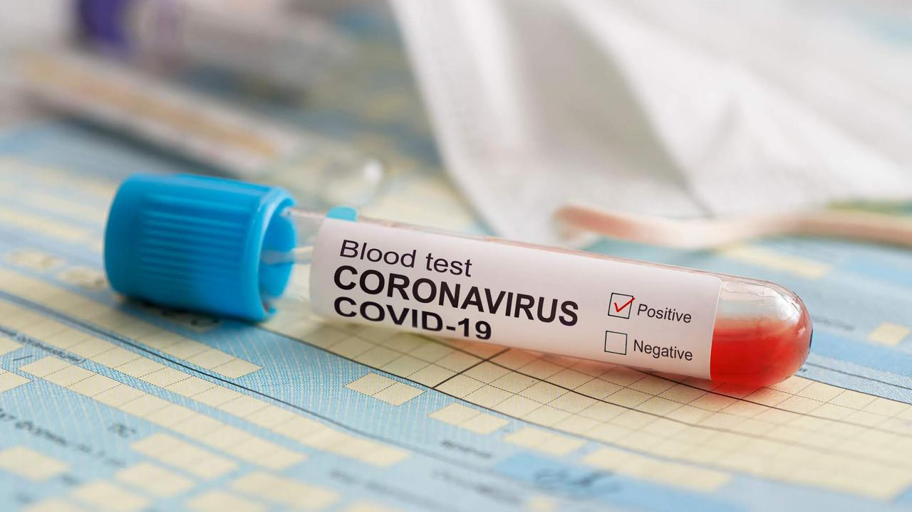

Corona Virus Disease
Disadur dari: Fimela.com (Penulis: Karla Farhana. Published: 6/4/2020)
Asal-usul Virus Corona SARS-Cov-2 yang menyebabkan coronavirus disease 2019 (COVID-19) terus menjadi perdebatan. Banyak yang belum tahu dari mana asal virus corona yang mulai merebak di Wuhan, China, Desember 2019. Pada awal kemunculannya, beredar kabar virus corona SARS-CoV-2 berasal dari hewan, yakni kelelawar, dan belakangan, dikabarkan juga muncul dari tenggiling
Namun, tidak hanya itu. Sempat pula beredar kabar, virus satu ini merupakan buatan manusia. Kabar terakhir itu menjadi spekulasi yang menyedot atensi masyarakat global, termasuk di Indonesia. Seperti dilansir dari Liputan6, dua negara adidaya di dunia, Amerika Serikat dan China, sempat terlibat saling tuding perihal asul-usul virus corona jenis baru ini. Presiden Amerika Serikat, Donald Trump, menyebut virus ini berasal dari China. Sementara, sebelumnya, juru bicara Kementerian Luar Negeri Cina, Zhao Lijian, mengatakan tentara Amerika Serikat yang membawa epidemi tersebut ke Wuhan. Kini, muncul sebuah pencerahan. Ada sebuah penelitian baru yang dipublikasikan dalam jurnal ilmiah Nature Medicine. Penelitian itu menunjukkan tidak ada bukti virus corona SARS-CoV-2 diciptakan manusia alias hasil kreasi di laboratorium.
Kristian Andersen PhD, Associate Professor Imunologi dan Mikrobiologi di Scripps Research, mengatakan mereka membandingkan data sekuens genom yang tersedia untuk strain coronavirus yang telah diketahui. Para peneliti yang dipimpin Shan-Lu Liu di Ohio State University mengatakan, tidak ada bukti kredibel virus ini dibuat secara genetik. Jadi, menurutnya, mereka sudah mengurutkan genom virus ini. Virus Corona merupakan keluarga besar (famili) dari virus yang dapat menyebabkan penyakit dengan tingkat keparahan yang luas. Sementara, para peneliti telah mengurutkan genom virus ini, dan membandingkannya dengan virus SARS dan MERS. Menurut Shan-Lu Liu, SARS dan MERS berasal dari kelelawar. Jadi, tidak mungkin Corona merupakan virus buatan manusia yang dibuat di dalam laboratorium. Peneliti yakin virus corona berasal dari alam dan bukan buatan manusia.